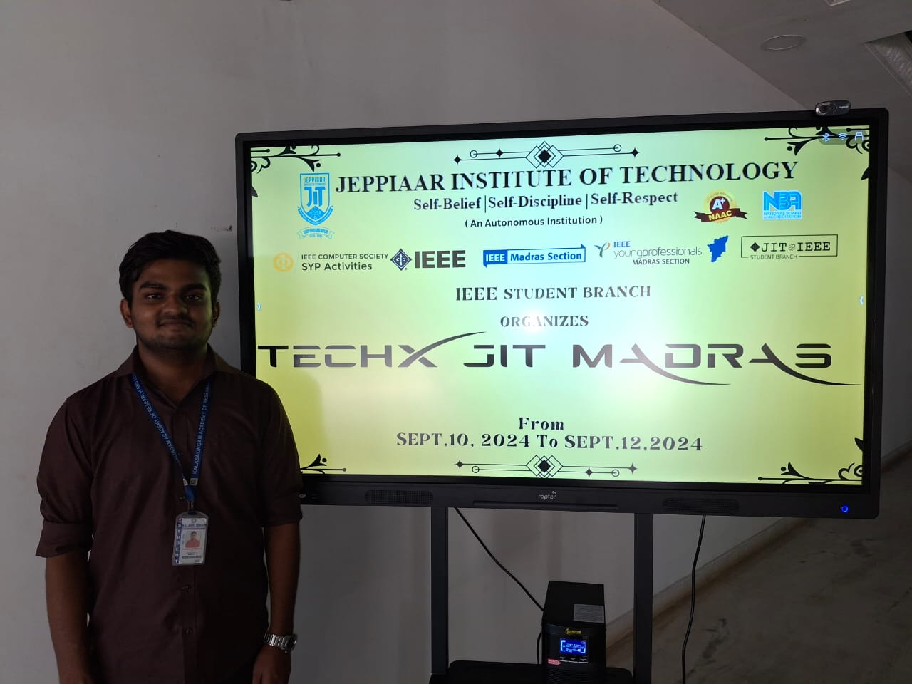
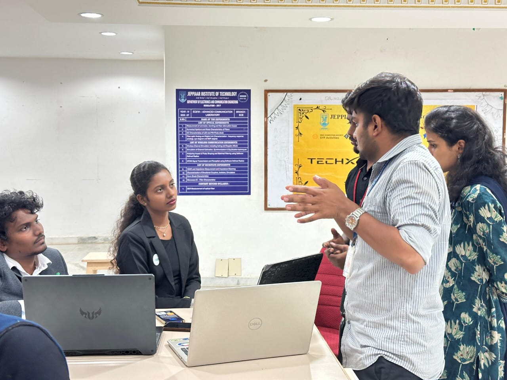
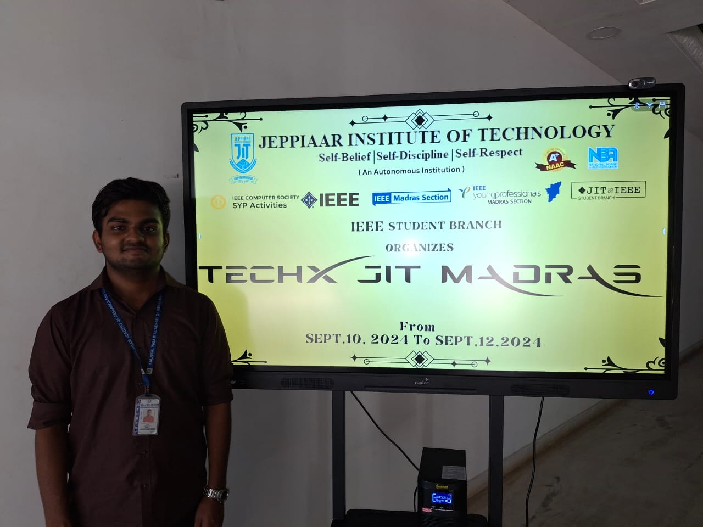
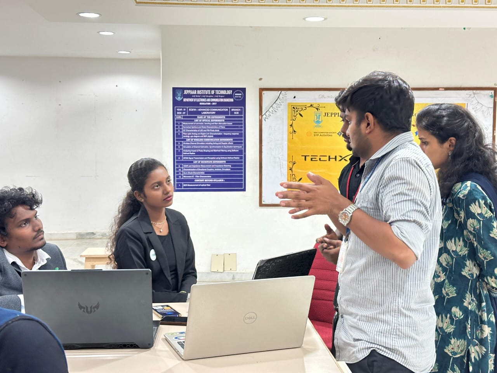
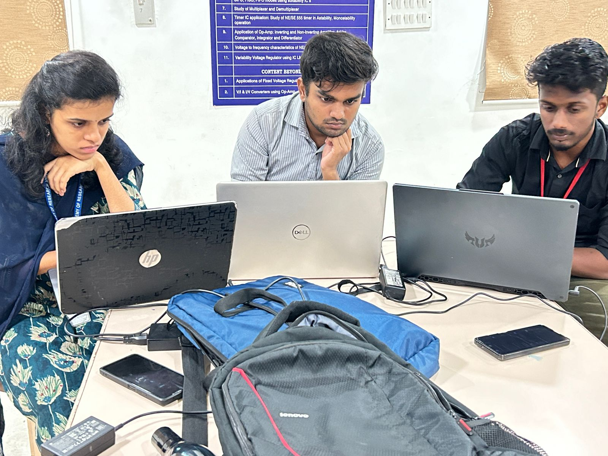
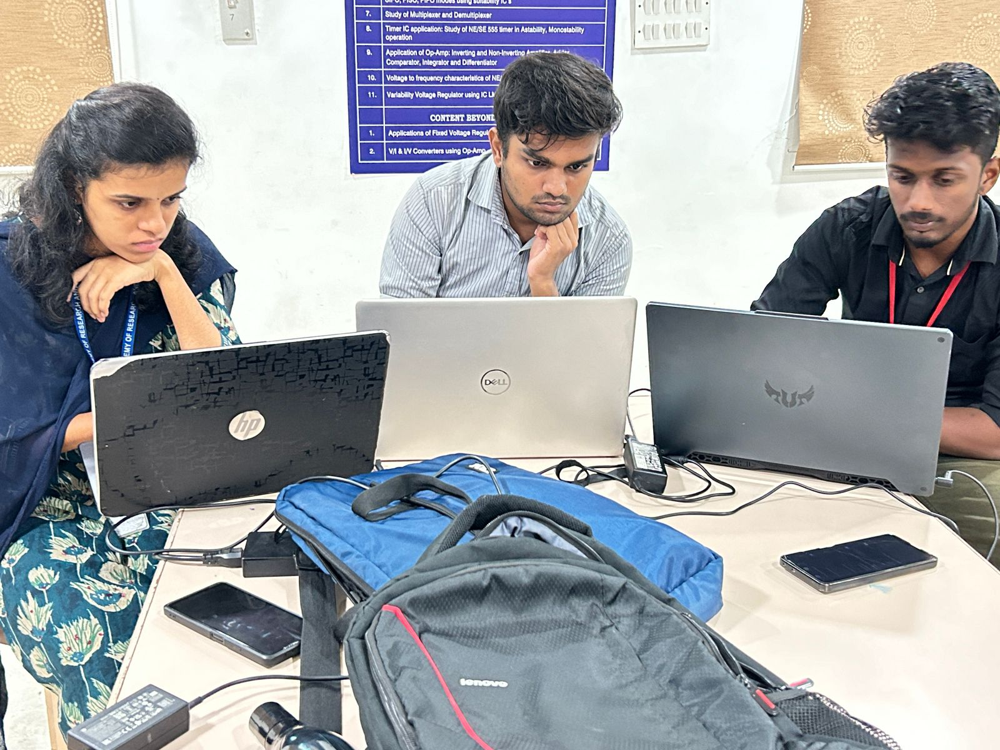

Tharun Kumaar U
| Data Analyst | Frontend Developer | Tech Enthusiast
| Data Analyst | Frontend Developer | Tech Enthusiast
I am a dedicated Computer Science Engineering student with a passion for Data Analyst, Frontend development and networking. With experience in Python, MySQL, Java, and hands-on projects like campus networking simulation, I am eager to apply my skills to real-world challenges.
Secured 1st place and a cash prize of ₹10,000 for developing an AI-Driven Crop Disease Prediction System using CNN and Streamlit.

 



 

Worked on optimizing autonomous vehicle algorithms by improving sensor fusion techniques and real-time object detection.
Assisted in configuring routers and switches, improving network performance and gaining hands-on experience in troubleshooting.
Python with MySQL, which serves as a sample program demonstrating the functionality of an advanced ATM machine. This program stores and retrieves customer data.
The dataset will include information on countries, their populations, GDP, life expectancy, education levels, internet usage, etc.
machine learning model(Linear Regression) to predict total_price(INR) using the dataset provided.
Developed an AI system using CNN and Streamlit for detecting crop diseases, which helped in real-time management of agricultural crops.
Designed and simulated a campus-wide network using Cisco Packet Tracer, implementing VLANs and subnetting for security.
I utilized Onshape CAD to design a multipurpose shovel, allowing it to serve both as a spade and a shovel.
Email: tharunkumaar.u@gmail.com
LinkedIn: linkedin.com/in/tharun-kumaar-u
GitHub: github.com/TharunKumaarU